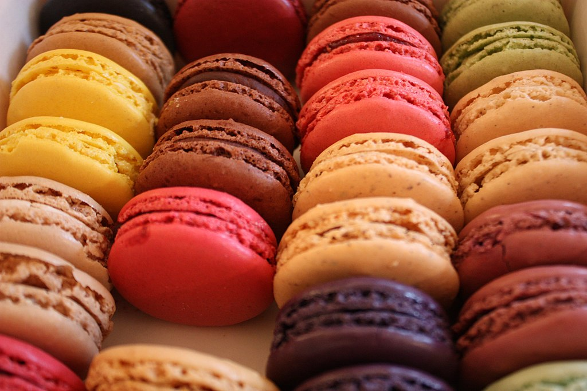

แบบฝึกหัดที่ 2 : MenuFood
รหัสนักศึกษา 6440011023 พิมพ์ลภัส เป็งทร
M A C A R O N

วัดถุดิบที่ใช้
อัลมอนด์ป่น 125 กรัม
น้ำตาลไอซิ่ง 150 กรัม
สีผสมอาหารชนิดผงสีแดง 1/4 ช้อนชา
ไข่ขาว 165 กรัม
น้ำตาลทราย 150 กรัม
น้ำเปล่า 40 กรัม
วิธีทำฝากมาการอง
- ร่อนผงโกโก้ น้ำตาลไอซิ่ง และผงอัลมอนด์บดละเอียด ลงในอ่างผสม พักทิ้งไว้
- ตีไข่ขาวประมาณ 1-2 นาที จากนั้นใส่น้ำตาลทรายทีละนิด ตีไปเรื่อย ๆ จนได้เมอแรงค์ตั้งยอดแข็ง
- ใส่ผงโกโก้ที่ผสมไว้ในเมอแรงค์ ค่อย ๆ แบ่งใส่ แล้วใช้ไม้พายคนเบา ๆ จนส่วนผสมเป็นของเหลวเข้ากันดี
- นำส่วนผสมใส่ถุงบีบ บีบเป็นวงกลมเท่า ๆ กัน เคาะถาดเพื่อไล่อากาศ แล้วพักไว้ประมาณ 30 นาที จึงค่อยนำเข้าเตาอบ
- อบที่อุณหภูมิ 150 องศาเซลเซียส ประมาณ 12-15 นาที
- เมื่ออบเสร็จนำออกจากเตา พักไว้ให้เย็นสนิท
วิธีทำไส้มาการอง
- นำวิปครีมหรือนมสดมาตั้งไฟ พอเริ่มเดือดให้ยกลงจากเตา
- เทวิปครีมหรือนมสดลงในถ้วยช็อกโกแลตที่เตรียมไว้ ทิ้งไว้ 1 นาที แล้วจึงคนให้เข้ากันดี
- ใส่เนยจืด คนให้ส่วนผสมเข้ากัน ปิดด้วยพลาสติก นำเข้าตู้เย็น รอจนเซตตัวแล้วตักใส่ถุงบีบ
ตารางสอนผสม
| ปริมาณส่วนผสม |
| อัลมอนด์ป่น |
125g. |
| น้ำตาลไอซิ่ง |
150g. |
| สีผสมอาหารชนิดผงสีแดง |
1/4 tsp. |
| ไข่ขาว |
165g. |
| น้ำตาลทราย |
150g. |
| น้ำเปล่า |
40g. |